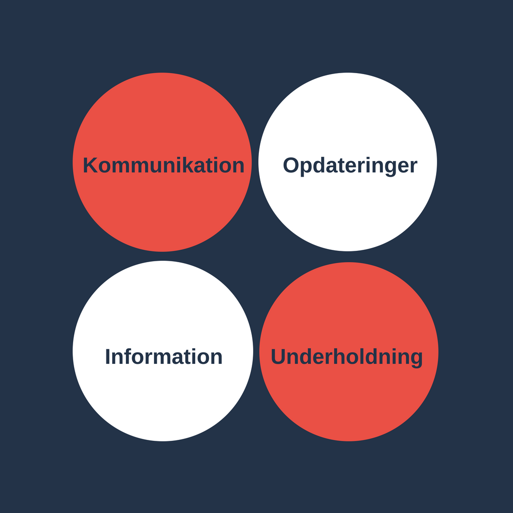
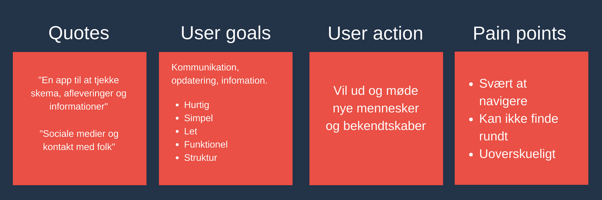
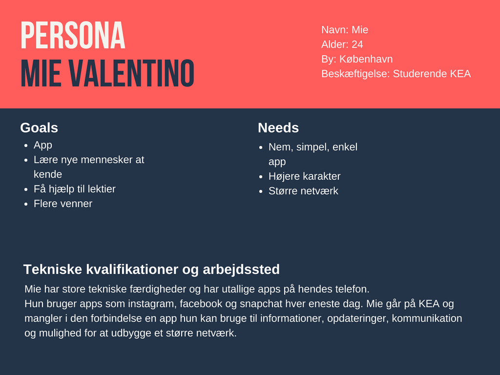
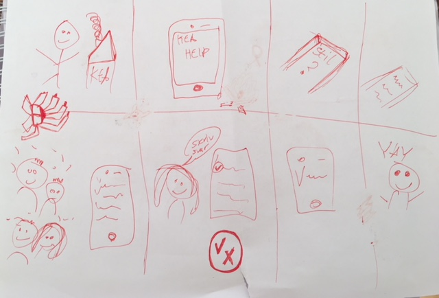
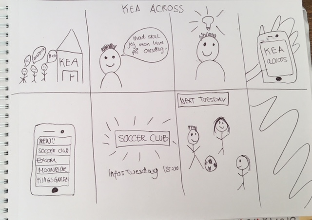
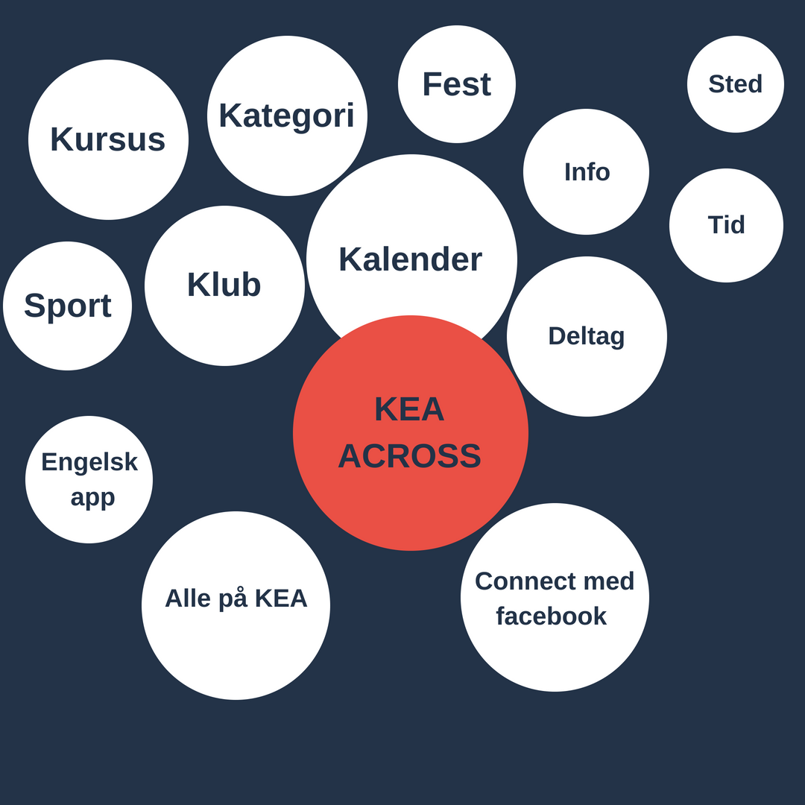
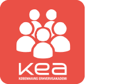
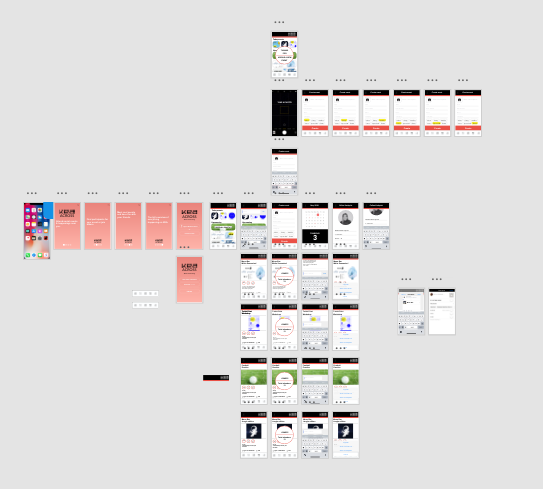

KEA APP
Link til Github
Spørgeskema

Brugerresearch
Indsamling af data
Data er indsamlet ud fra ovenstående spørgeskema. Målet for indsamling af data er at finde frem til en løsning (app) der både dækker afsender og modtagers behov. Data blev indsamlet i form af kvantitavmetode, som spørgeskema. Spørgeskemaet blev besvaret online på google analyse af ca. 50 elever.
Modtagers behov
- Simpel app løsning der giver hurtigt overblik: skema, afleveringer, information, opdateringer
- Billigere/ bedre kantine
- Sociale arrangementer
- Lektiehjælp / elev hjælpeordning
- Kurser (eksamensangst)
Experience map
Problemformulering
“Multimediedesignstuderende på den danske og den internationale linje har ikke meget med hinanden at gøre, det vil KEA gerne gøre noget ved. Men hvordan kan en KEA app understøtte dette? KEA app’en må også gerne forbedre de studerendes muligheder for at få et arbejde efter endt uddannelse.”
Persona
Dokumentation af Design Charette
Under Design Charette brainstormede jeg på følgende ideer til apps:
- KEA Study Help
- KEA Ask
- KEA Across
1. KEA Study Help

Historien der illustreres i storyboardet omhandler en Mie der ikke kan finde ud af sine lektier og Kasper der godt kan. Mie får derefter en ide. Hun vil downloade og bruge KEA appen KEA Studies, da hun herinde kan finde hjælp og selv tilbyde hjælp til svære lektier. Herinde finder hun Kasper der er dygtig til HTML. Mie og Kasper aftaler en dag, tidpunkt og mødested. Mie får hjælp og derefter sender hun et beskendt beløb via KEA pay til Kasper som tak for hjælpen. Næste fredag mødes de to tilfældigt til fredags bar får en øl, snakker og bliver derefter gode venner.
2. KEA Ask
Hvis man sidder og er itvivl om lektierne eller andet, kan man tage sin KEA ask app frem og stille et spørgsmål. Derefter kan resten af brugerne se spørgsmålet og gå ind og svare. Som bruger kan man også like eller dislike hvis svaret er rigtigt eller forkert.
3. KEA Across
En dag efter skole sidder Christian derhjemme og keder sig. Han er meget i tvivl om hvad han skal lave, men pludselig får han en ide. Han downloader KEA across appen, opretter en profil også er han igang. Appen tilbyder mange forskellge begivenheder, klubber, kurser og meget mere Christian kan deltage i. Kan finder hurtigt den ny opstartede fodbold klub spændende og tilmelder sig. Næste tirsdag tager han til træning hvor han hygger sig med sine nye venner.
Udfald af Design Charette - KEA Across
Jeg har valgt at gå videre med løsning nr. 3 - KEA Across. Denne app er den jeg ud fra brugernes svar og holdninger finder mest interessant. Derudover er det en app jeg selv ville benytte. KEA Across er en begivenhedsapp der samler vigtige arrangementer, kurser, fester, fredagsbarer, klubber m.m der kan være med til at skabe et større og bredere netværk og sammenhold på KEA.
Brainstorm på ideen:
Features og funktionaliteter
Brugssituation
- Slå noget op/find noget: Finde arrangement, begivenhed, kursus eller klub
- Check-in/status: Tjekke status på om der kommet en begivenhed man har lyst til at deltage i.
- Underholdning: Appen kan bruges hvis man keder sig til at scrolle og se om der er nogle fede arrangementer i kommende tid.
Brugskontekst
Appen skal bruges når man har behov for at tjekke op på sociale arrangmenter. Dette kan både være en gang ydelser som en fest, fredagsbar, kursus, men den tilbyder også tilmelding til klubber som fx en læseklub, fodboldklub eller lign.
AOF
Aktiviteter
- Finde begivenheder
- Lave begivenheder
- Chat
- Deltag
Objekter
- Startside
- Søg
- Opret event
- Kalender
- Profil
Funktionaliter
- Opslået opslag (hjælp, søger, andet). Dagens events, kommende events.
- Søg efter bestemt emne osv.
- Lav nyt event, tilføj billede, titel, sted/tid og dato.
- Viser alle datoer og fuldt overblik over dagene
- Billede, navn, linje, semester
Startside
Søg
Opret event
Kalender
Profil
Paper prototype
XD prototype
Dokumentation af prototype
Jeg har benyttet mig af skrifttyperne arial og lato til mit indhold. Til basis elementerne som tastertur har jeg brugt Apples SF Pro Display. Derudover er følgende KEA farver styrende i appen.

I appen er der primært lagt vægt på funktion "Create Event", da jeg finder denne knap/funktion vigtigst. Dette skyldes at det er her appens hovedfunktion ligger. Jeg har derfor brugt mest af min tid på at gå i dybden med dette.
App Icon
Full XD overview
Test af prototype
Test 1 - Fandt enkelte steder hvor jeg manglede at forbinde funktionerne. Jeg blev endvidere gjort opmærksom på at jeg manglede at markere hele billedet og ikke kun teksten i enkelte situationer.
Test 2
Er det en app du ville bruge?
"Ja den er nyttig og skaber godt overblik over hvad der foregår på skolen.
Beskrivt layoutet?
"Meget simpelt, nemt og brugervenligt"
Er den funktionel?
"Ja, knapper virker alle steder. Enkelte steder det ikke fungere såsom kalender og søg. Man kan godt se at der brugt mest tid på opret funktion"
Mangler der nogle features/funktioner?
"Nej kan umiddelbart ikke komme i tanke om noget".
Visuelle udtryk
Havde været fedt med andre farver, er ikke så vild med lakse farve i starten. Menubaren kunne endvidere være mere fremtrædende.
Præsentation af XD prototype
1. Fang opmærksomhed
Hvad skal du lave fredag aften? Har du brug for nye venner og bekendte? Brug for at lære nye mennesker at kende? Lyst til at melde dig ind i en klub?
2. Needs
Alle mennesker har behov for socialt nærvær.
3. Approach
KEA Across samler alle begivenheder og sociale arrangementer, så du aldrig skal gå glip af noget igen. Det er muligt at møde nye studerende på tværs at årgange, linjer og nationaliteter.
4. Benefits
Denne begivenhedsapp er en simpel, let og enkel løsning der giver overblik til dig som forbruger. Du kan lynhurtigt tage appen frem og finde ud af hvad der sker i dag eller på næste tirsdag.
5. Competetion
Appen udskiller sig fra andre apps, da denne app kun er tilknyttet KEA. Desuden er det ikke kun KEA eller andre organisationer der har mulighed for at oprette event. Du har nemlig også selv mulighed for at oprette en begivenhed. Det er derfor muligt at oprette en hurtig behivenhed der fx hedder : "Kongens Have idag". Dermed kan du få samlet en masse studerende til en hyggelig sammenkomst.
6. Action
Hvis du ikke allerede har downloadet appen, kan du med fordel gøre dette nu. Der er nemlig realease party senere i fredagsbaren.